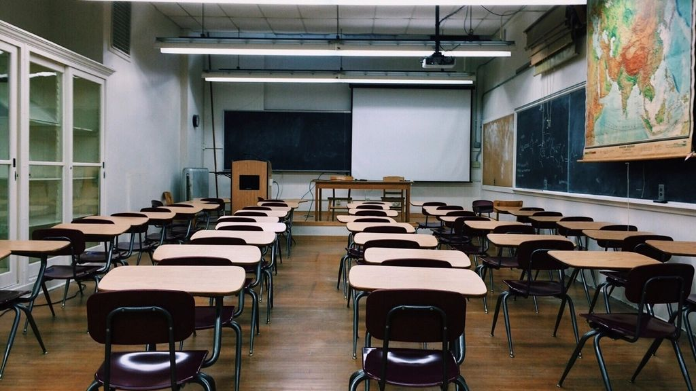
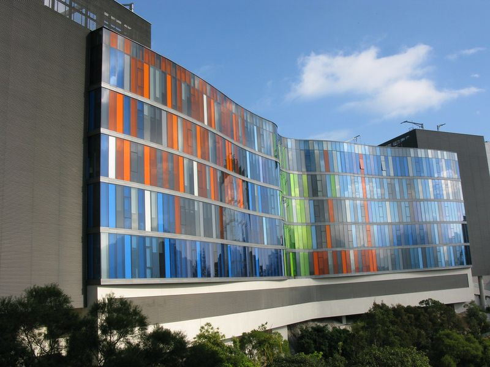
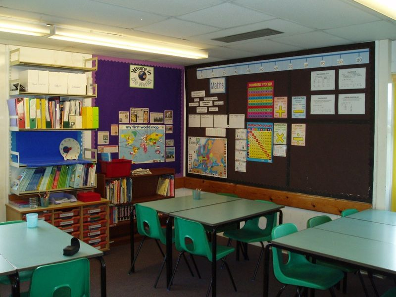
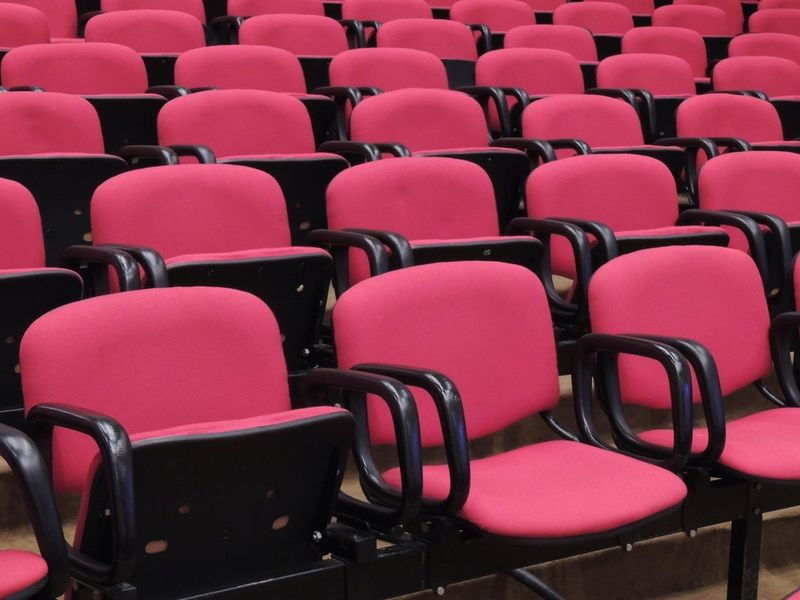

A science high school in Cebu
Where curious minds become bright stars.
A public science high school and senior high school in Cebu for learners who love to ask why, with the STEM strand, ABM, HUMSS, and TVL-ICT taught by specialists.
- Strands offered
- 4
- Tuition
- Free
- Work immersion
- 80 hrs
Welcome
A science high school that takes every question seriously
Tala means "star" in Filipino. We chose it because the best learning feels like navigation: you find a fixed point, ask good questions, and keep moving toward something bright.
As a science high school, we pair rigorous academics with research, competitions, and real work immersion, so graduates leave ready for university, technical careers, or their own ventures.
"We measure success by the questions our students learn to ask, not only by the answers they memorize."Office of the Principal
Senior high strands
From the STEM strand to TVL-ICT, choose your next step
Science, Technology, Engineering & Mathematics
The STEM strand is our flagship: pre-calculus, general chemistry and physics, and a two-semester research project defended before a panel.
- Research capstone
- Robotics & coding club
- Science fair & olympiads
Accountancy, Business & Management
ABM builds business sense through accounting, economics, and a student-run enterprise that operates a stall during the school fair.
- Student enterprise
- Financial literacy
- Business plan pitch
Humanities & Social Sciences
HUMSS develops writers, speakers, and future public servants through creative writing, philosophy, and community research.
- Debate & MUN
- Campus journalism
- Community research
Technical-Vocational-Livelihood: ICT
TVL-ICT covers programming, computer systems servicing, and web design, with industry-aligned assessments in Grade 12.
- Web & app projects
- Computer systems servicing
- Industry assessment
Announcements
News from campus
-

ResearchGrade 12 STEM research defense week begins October 27
Forty-two research teams present their capstone studies to panels of university faculty.
- Enrollment
Early registration for Grade 11 opens in March
- Competitions
Robotics club advances to the regional finals
- Campus
Library extends hours during the exam season
Senior high enrollment
Senior high enrollment in four steps
Register online
Fill in the learner profile and choose your preferred strand.
Take the assessment
STEM applicants take a short science and math entrance assessment.
Submit documents
Bring the requirements to the registrar for verification.
Attend orientation
Meet your adviser, get your schedule, and tour the campus.
Campus life
Campus life at a senior high school in Cebu
Learning resource center 
Collaborative classrooms 
Auditorium
Work immersion partner industries
- Hospitals & clinics
- IT & BPO companies
- Banks & cooperatives
- Local government offices
- Engineering firms
- Media & publishing
FAQ
Questions from parents
When is senior high enrollment?
Senior high enrollment for Grade 11 opens in March and closes in June. Returning Grade 12 students re-enroll in May.
Who can apply for the STEM strand?
Grade 10 completers with a final average of 85 or higher in Science and Mathematics may apply for the STEM strand after passing the entrance assessment.
Is there a tuition fee?
As a public science high school, Tala Science High charges no tuition. Students pay only for optional activities.